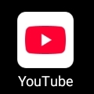

Content
How Your Money Is Earned On YouTube - Very Detailed, Many Words Version
Earning money on YouTube is not just about uploading videos, it is about building a system where your content works for you every single day, even when you are sleeping. The first and most known method is Ad Revenue from the YouTube Partner Program, also called YPP. When you join YPP, YouTube starts placing different types of ads on your videos like skippable ads before the video starts, non-skippable ads, bumper ads that are short, mid-roll ads that appear in the middle of long videos over 8 minutes, and ads on Shorts feed. Every time a viewer watches an ad or clicks on it, an advertiser has paid YouTube, and YouTube shares that money with you. The amount you earn depends on your niche, your audience location, your watch time, and your CPM which means cost per 1000 views and RPM which means revenue per 1000 views. For example, finance, tech, and business channels earn higher CPM than entertainment or comedy because advertisers pay more to reach those audiences. Viewers from USA, UK, Canada, and Australia also give higher earnings compared to other regions.
The second major income stream is YouTube Shorts Revenue Sharing. YouTube created a Shorts fund and now a permanent ad revenue sharing model for Shorts. All the money from ads shown between Shorts videos is collected into one pool, then YouTube takes its share and distributes the rest to creators based on how many views their Shorts got. So even if you make only 30 second vertical videos, you can still earn monthly without long videos, but you need to be very consistent and viral.
The third income stream is Channel Memberships and Subscriptions. Once you have loyal fans, you can offer memberships where they pay 2 dollars, 5 dollars, or 10 dollars every month to get exclusive perks. These perks can be exclusive live streams, members-only videos, custom emojis, early access to videos, or private community posts. This creates recurring monthly income which is very stable compared to ad revenue that changes every month. Some creators earn thousands of dollars just from memberships alone because they built a strong community.
The fourth income stream is Super Features which include Super Chat, Super Stickers, and Super Thanks. Super Chat happens during live streams where viewers pay money to pin their message at the top of the chat so you can see it and reply. Some fans pay 5 dollars, 20 dollars, even 100 dollars or more just to get your attention. Super Stickers are paid animated stickers viewers send during live streams. Super Thanks is similar but for regular uploaded videos, where a viewer can tip you directly on a video they loved. You get around 70 percent of that money and YouTube keeps 30 percent.
The fifth and most powerful income stream is Brand Deals and Sponsorships. This is where the real big money is. Once you have 10,000 subscribers or more with good engagement, brands will start contacting you or you can contact them. A brand can pay you a fixed amount to mention their product for 60 seconds inside your video, or to make a full video dedicated to their product. For example, a small channel with 50k subscribers can charge 200 to 500 dollars per sponsored video, a channel with 500k subscribers can charge 3000 to 10000 dollars per video, and channels with millions can charge 20,000 dollars and above for one video. This depends on your views, your niche, and how professional your content is. Tech, finance, VPN, education apps, and trading platforms pay the highest sponsorship rates.
The sixth income stream is Affiliate Marketing. This is where you put special tracked links in your video description. For example, you review a microphone, a laptop, a book, or a software. You put an Amazon affiliate link or a link to that software. Every time someone clicks that link and buys the product, you earn a commission from 3 percent to 50 percent depending on the program. Many YouTubers earn more from affiliate marketing than from AdSense itself, especially in review channels, tutorial channels, and how-to channels about HTML, CSS, Python, and making money online. You can use Amazon Associates, ClickBank, ShareASale, or direct company affiliate programs.
The seventh income stream is Selling Your Own Products and Services. YouTube is the best free traffic source in the world. You can use that traffic to sell your own things like eBooks, online courses teaching HTML, Python, CSS, presets, templates, merch like t-shirts, hoodies, caps with your brand logo, consulting services, or coaching calls. YouTube has a Merch Shelf feature where your products appear directly below your videos so viewers can buy without leaving YouTube. This way you keep 100 percent of the profit, unlike ad revenue sharing.
The eighth income stream is YouTube Premium Revenue. When YouTube Premium subscribers who pay to watch without ads watch your videos, you get a share of their subscription fee based on how much watch time they spent on your channel compared to other channels. It is small but it adds up every month automatically.
To truly succeed and earn consistently, you must understand the YouTube algorithm and audience retention. YouTube pushes videos that keep people watching for a long time. So you need strong hooks in the first 15 seconds, good storytelling, clear audio, good lighting, and consistent upload schedule like 2 or 3 times per week. You also need good thumbnails and titles to increase click-through rate. More clicks and more watch time equals more ads shown and more money earned. You must also build trust by being authentic and not spamming ads or fake products, because your audience is your long-term asset. If they trust you, they will buy from your affiliate links, join your memberships, and support your brand deals for many years.

Okuyat Morgan Jeremiah
Christian, Student, Developer and Content creator.
2011 baby